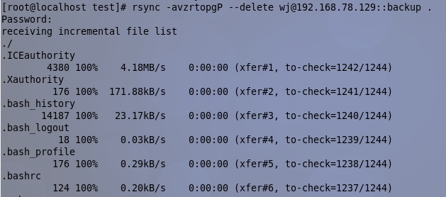
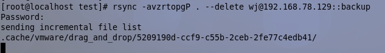

Linux下配置rsync服务器
一、简介
rsync是一个远程数据同步工具，可以快速同步多台主机间的文件。Rsync使用所谓的“Rsync算法”来使本地和远程两个主机之间的文件达到同步，这个算法只传送两个文件的不同部分，而不是每次都整份传送，因此速度相当快。当然不仅仅是远程，在本地同步、复制数据也可以使用这个命令，也只传送文件的不同部分。
二、配置rsync server
1、启动rsync server
#vim /etc/xinetd.d/rsync
把disable的yes改为no
service rsync{ disable = no socket_type = stream wait = no user = root server = /usr/bin/rsync server_args = --daemon log_on_failure += USERID }
2、配置/etc/rsyncd.conf(需要手动生成)
全局参数 uid = root //运行RSYNC守护进程的用户 gid = root //运行RSYNC守护进程的组 use chroot = no //不使用chroot max connections = 4 // 最大连接数为4 strict modes =yes //是否检查口令文件的权限 port = 873 //默认端口873 pid file = /var/run/rsyncd.pid //pid文件的存放位置 lock file = /var/run/rsync.lock //锁文件的存放位置 log file = /var/log/rsyncd.log //日志记录文件的存放位置 模块参数 [backup] //这里是认证的模块名，在client端需要指定 path = /home/backup/ //需要备份的目录,不可缺少！ comment = This is a test //这个模块的注释信息 ignore errors //可以忽略一些无关的IO错误 read only = yes // 只读 #list = no //不允许列文件 auth users = wj //认证的用户名，如果没有这行则表明是匿名，此用户与系统无关 secrets file = /etc/rsync.pas //密码和用户名对比表，密码文件自己生成 hosts allow = 192.168.1.1,10.10.10.10 //允许主机 hosts deny = 0.0.0.0/0 //禁止主机 #transfer logging = yes
3、配置rsync密码（在上边的配置文件中已经写好路径）
/etc/rsync.pas（名字随便写，只要和上边配置文件里的一致即可），格式(一行一个用户)
账号：密码
#vi /etc/rsync.pas
wj:1111
权限：因为rsync.pas存储了rsync服务的用户名和密码，所以非常重要。要将rsync.pas设置为root拥有, 且权限为600。
cd /etc chown root:root rsync.pas chmod 600 rsync.pas
4、让配置生效
service xinetd restart
5、同步文件
①从SERVER端取文件
rsync -vzrtopg --progress --delete wj@192.168.78.129::backup /home/backup --password-file=/etc/rsync.pas

②向SERVER端上传文件
rsync -vzrtopgP . wj@192.168.78.129::backup

三、rsync命令参数详解
-a存档模式
-v表示verbose详细显示
-P表示代替-partial和-progress两者的选项功能
-z表示压缩
-r表示recursive递归
-t表示保持原文件创建时间
-o表示保持原文件属主
-p表示保持原文件的参数
-g表示保持原文件的所属组
-e ssh建立起加密的连接。
--delete是指如果服务器端删除了这一文件，那么客户端也相应把文件删除，保持真正的一致。
--exclude不包含/ins目录
--partial阻止rsync在传输中断时删除已拷贝的部分(如果在拷贝文件的过程中，传输被中断，rsync的默认操作是撤消前操作，即从目标机上
删除已拷贝的部分文件。)
--progress是指显示出详细的进度情况
--size-only 这个参数用在两个文件夹中的差别仅是源文件夹中有一些新文件，不存在重名且被修改过的文件，因为这种文件有可能会因为内容被修改可大小一样，而被略过。这个参数可以大大地提高同步的效率，因为它不需要检查同名文件的内容是否相同。
--password-file来指定密码文件，内容包含server端指定认证用户的密码。这样就可以在脚本中使用而无需交互式地输入验证密码了，这里需要注意的是这份密码文件权限属性要设得只有属主可读。
wj@192.168.78.129::backup
wj是指server端指定认证的用户
192.168.78.129是指服务器端的ip
::backup 表示服务器端需要同步的模块名称；